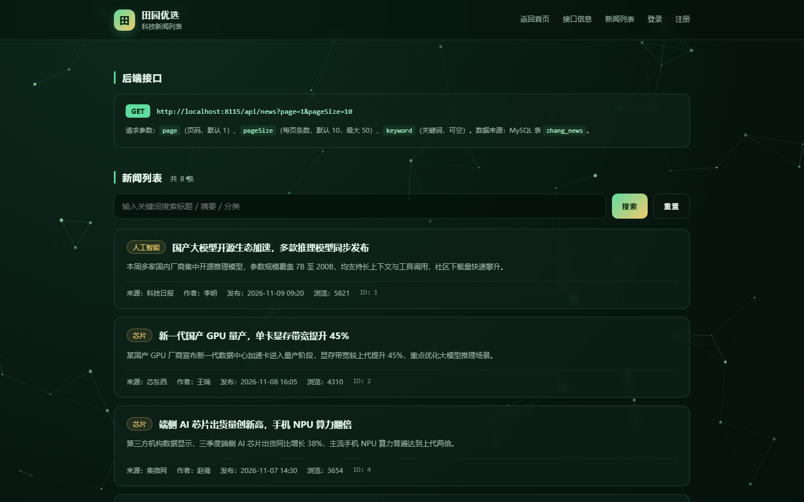

前台功能 · 02
科技新闻列表
展示 MySQL 中的科技新闻数据，支持关键词搜索、分类筛选、分页与详情查看，数据由后端接口统一返回。
news.html

页面说明
列表页向后端请求新闻数据，渲染标题、摘要、来源、发布时间与标签；顶部工具栏提供关键词输入、分类下拉与搜索按钮，底部提供上一页 / 下一页切换。
搜索与分类条件会随请求一起提交，页面同时把请求参数与返回数据输出到控制台，方便核对分页结果与筛选逻辑。
功能要点
- 关键词搜索：标题与摘要模糊匹配
- 分类筛选：按新闻分类过滤
- 分页浏览：显示总条数与当前页
- 详情查看：点击卡片查看完整正文
- 空状态提示：无匹配结果时给出说明
接口说明
| 方法 | 接口路径 | 说明 |
|---|---|---|
| GET | /api/news |
分页查询新闻列表，支持 keyword、category、page、pageSize 参数 |
相关文件
news.html
js/news.js
backend/routes/news.js